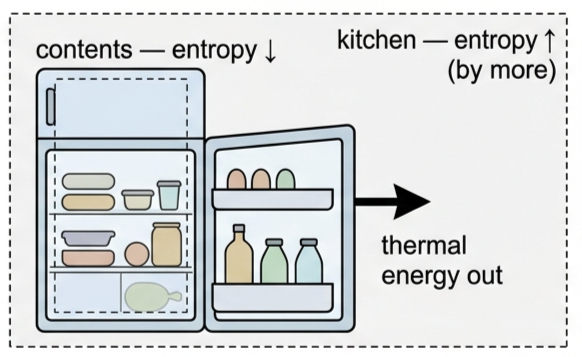
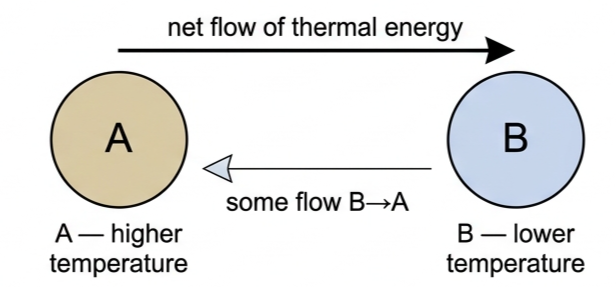
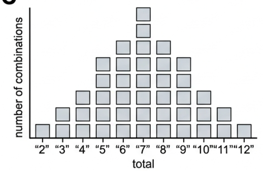
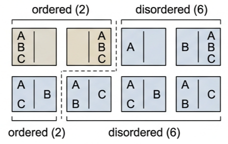
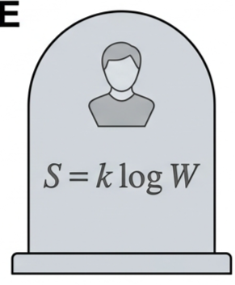

🧊 Hook – the fridge that never really wins
Open a fridge and its contents are colder and more ordered than the kitchen around it — the food's entropy has gone down. That looks like it breaks the second law of thermodynamics. It doesn't: the fridge pumps thermal energy out through the coils at the back, and the kitchen warms up by more than the fridge cooled down. The entropy of the fridge contents fell, but the entropy of the fridge + kitchen system rose.

📖 Entropy and the second law
Entropy, S, is a thermodynamic quantity that relates to the degree of disorder of the particles in a system. Molecular disorder and entropy are relevant everywhere — to every process, in every system, at any time in the Universe. That universality is summarised by the second law of thermodynamics:
This is sometimes stated as "entropy can never decrease" — but that is only true of the total entropy of an isolated system. It is entirely possible to reduce the local entropy of part of a system, provided another part gains even more. The growth of a plant, animal or human reduces the entropy of the molecules built into the growing body, but there is an even greater increase in the entropy of all the surrounding molecules involved in the chemical and biological processes. Water freezing and the refrigerator above are further examples.
The statistical behaviour of enormous numbers of uncontrollable particles leads to an inescapable conclusion: differences in macroscopic properties — energy, temperature, pressure — must even out over time, represented by continuously increasing entropy. Eventually all energy would be spread out, all temperature differences eliminated, and entropy would reach a final, maximum, steady value. This is often called the "heat death" of the Universe.
🌡️ Alternative statements of the second law
Consider two objects at different temperatures placed in thermal contact in an isolated system, with no external influences.

Thermal energy can flow from A to B and from B to A — but the net flow is from A to B, because the increase in entropy of B is greater than the decrease in entropy of A, for the same energy transfer. This gives the version of the second law first stated by Rudolf Clausius:
Heat pumps can move thermal energy from colder to hotter, but only by doing external work — never spontaneously. Insulation can reduce the rate of energy transfer, but can never stop it completely. A third version, the Kelvin statement, is expressed in terms of a thermodynamic cycle:
A few everyday comparisons of disorder/entropy: a gas in a larger volume has greater entropy than the same gas at the same temperature in a smaller volume; a gas at higher temperature has greater entropy than the same gas at lower temperature; and a liquid has greater entropy than a solid of the same material at the same temperature.
🎲 Counting microstates — why disorder wins
To express entropy numerically, we count the number of ways a system's particles can be arranged — its multiplicity, Ω. Consider throwing two six-sided dice and adding the totals: there are 36 possible combinations, from 2 to 12.
| Diagram type | What's shown | Shape / pattern | What to read |
|---|---|---|---|
| Dice-sum frequency | Totals 2–12 (x) against number of combinations giving that total (y) | Symmetric peak at 7, tapering to 1 at each end | The peak total (7) is most probable because it has the greatest number of combinations — six ways: 1+6, 2+5, 3+4, 4+3, 5+2, 6+1 |
| Particle microstate diagram | 3 particles A, B, C split between left/right halves of a container | 2 "ordered" arrangements (all particles on one side) vs 6 "disordered" arrangements (mixed) | All 8 microstates are equally likely individually, but disordered arrangements outnumber ordered ones 6 to 2 — so disorder is the more probable overall state |


Put simply: a total of 7 is most likely because it can be produced in the greatest number of ways. The same idea applies to gas particles distributed between two halves of a container: with 10 particles there are already more than 1000 (2¹⁰) possible microstates, and real gases contain 10¹⁹ or more particles — so the probability of finding them all on one side is vanishingly small. The greater the number of possible microstates of a system, the greater its disorder and the greater its entropy.
where \(k_{\text{B}}\) is the Boltzmann constant and \(\Omega\) is the number of possible microstates (its multiplicity). \(\Omega\) is a large number, so \(\ln\Omega\) is far more manageable.
✍️ Worked example 1 – entropy from microstates (B4.10)
What is the entropy of a system which has \(1\times10^{22}\) microstates?
\(\ln(1\times10^{22}) = 50.7\)
\(= 7.0\times10^{-22}\ \text{J K}^{-1}\).
In practice, such direct microstate calculations are usually unrealistic — but changes of entropy in macroscopic situations, using \(\Delta S = \Delta Q/T\), are much easier.
✍️ Worked example 2 – entropy change of a cooling cup of coffee (B4.11)
Calculate the entropy change when 5000 J of thermal energy flows out of a hot cup of coffee at 70 °C into the surrounding room at 25 °C. Assume the temperatures of the coffee and the room are unchanged.
room: \(\Delta S = \dfrac{+5000}{298}\)
Overall: \(16.8 - 14.6 = +2.2\ \text{J K}^{-1}\).
🌍 Real-world: why fridges and heat pumps need power
Every fridge, freezer and heat pump does the same job: it moves thermal energy from a colder place to a hotter one. The Clausius statement says this can never happen spontaneously, so the device must do external work to force it — which is exactly why these appliances need an electricity supply, and why running one always releases more thermal energy into the room than it removes from its interior.
🚀 HL extension – Boltzmann's equation and the heat death of the Universe
The equation \(S = k_{\text{B}}\ln\Omega\) was devised by the Austrian physicist Ludwig Boltzmann, who considered it so important that it was carved on his memorial in Vienna (using \(W\) instead of \(\Omega\)).

Challenge: if entropy keeps increasing without limit, what is the ultimate fate of the Universe? Answer: eventually all macroscopic differences in energy, temperature and pressure would even out, entropy would reach a final, maximum, steady value, and no further useful work could be extracted anywhere — the "heat death" of the Universe.
⚠️ Trap corner – common mistakes
| Misconception | Correct view |
|---|---|
| "Entropy never decreases anywhere" | Local entropy of part of a system can decrease, provided the rest of an isolated system gains even more. Only the total entropy of an isolated system never decreases |
| \(\Delta S = \Delta Q/T\) can be used for any temperature change | This form assumes \(T\) stays (approximately) constant while \(\Delta Q\) is transferred — exactly as assumed for the coffee and the room above |
| The Clausius statement means heat can never flow cold → hot | It means that transfer cannot happen spontaneously. A heat pump can force it, but only by doing external work |
| More microstates means more energy | \(\Omega\) measures the number of possible arrangements, i.e. disorder — not the amount of energy in the system |
Complete the statements:
✓ \(S = (1.38\times10^{-23})\times\ln(5.0\times10^{24}) = (1.38\times10^{-23})\times 56.9 = 7.9\times10^{-22}\ \text{J K}^{-1}\).
✓ \(T = 273\ \text{K}\)
✓ \(\Delta S = \Delta Q/T = 16\,700/273 = +61\ \text{J K}^{-1}\).
✓ The second law applies to the total entropy of an isolated system, not to one part of it in isolation.
✓ The thermal energy expelled at the back of the fridge raises the entropy of the (warmer) kitchen by more than the contents' entropy fell, so the total entropy of contents + kitchen increases.
✓ Some of the thermal energy taken in must always be rejected to a cold reservoir rather than converted to work.
✓ Efficiency = W/Qh, so if some Qh cannot become W, efficiency must always be below 100%.
✓ (b) "All on one side" can happen in only 2 ways (all left, or all right).
✓ The remaining 14 microstates are mixed arrangements.
✓ Mixed (disordered) arrangements are far more probable, since they vastly outnumber the 2 ordered ones.